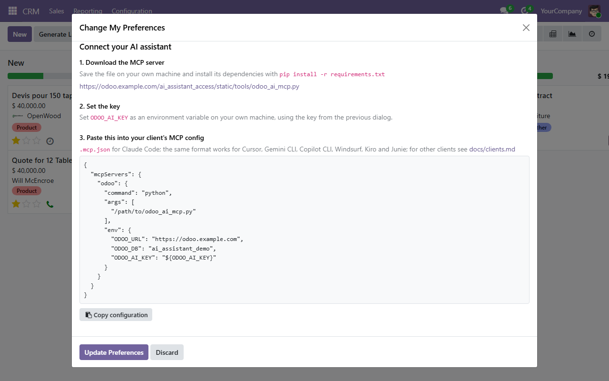
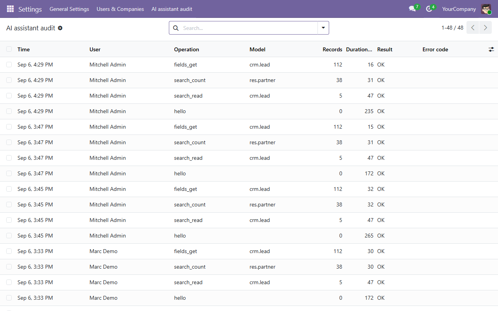

Give every user a personal AI access, paired with a one-time code, so their own AI agent can look at their own Odoo data - nothing more. Access is read-only by default. Editing is opt-in and works only while the administrator keeps Allow editing on.

Each user generates their own key and connects their own MCP capable AI agent (Claude Code, OpenAI Codex, GitHub Copilot, Gemini CLI, Cursor, and more) under their own subscription.
Read requests run on a fresh PostgreSQL transaction with SET TRANSACTION READ ONLY as the first statement, so a write attempt fails at the database level. Writing exists only for read and edit access, with Allow editing on, and never deletes.
The module never holds or calls any AI provider credential. There is no field for one, no import of an AI SDK, no outbound call to any AI provider.
odoo_ai_mcp.py) runs on the user's own machine, under their own AI agent session.POST /ai_assistant/v1/<op>, authenticated with the personal key, and runs under the key owner's own identity - same access rights, same record rules as the Odoo UI.create and write on top. No business method is dispatchable.create (1 record) and write (up to 50 records) only in the administrator's Editable models (default: CRM leads, project tasks, activities, contacts) that are also readable and not blacklisted.When the assistant connects, it calls hello, which sends a single Odoo inbox notification to its owner: "Your AI assistant just connected to Odoo with read-only (or read and edit) access (from IP <ip>). If this was not you, revoke the key in Preferences > AI Assistant." The request body is ignored entirely, so this cannot be used to inject arbitrary text. Because the message includes the connecting IP address, it doubles as a connection alert if a key is ever stolen. The request audit log and the key metadata are internal records of the module and cannot be reached through the API.
READ ONLY transaction (database-level, not just application code). Write requests are possible only for read and edit keys while Allow editing is on.create and write for read and edit access only. No unlink.
The Odoo module itself has no external Python dependency beyond Odoo's own psycopg2. The companion MCP server, which runs outside Odoo on the user's own machine, requires:
mcp, version >=1.2,<2httpxSupport: info@devarc.ch · Source & docs · License: LGPL-3